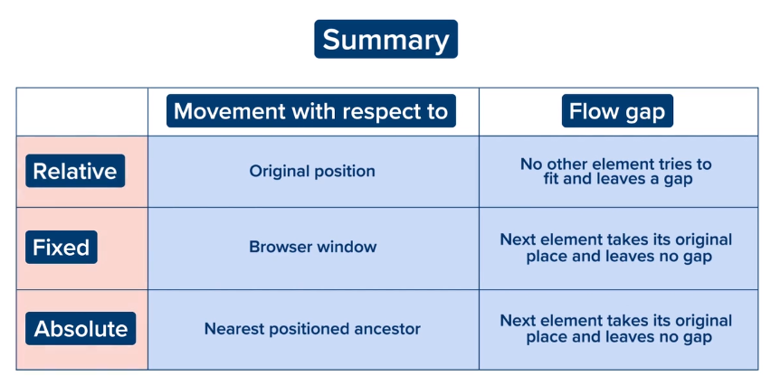

Welcome to the CSS module
CSS stands for Cascading Style Sheets. There are 3 ways of styling a webpage:
- Inline Styling
- Internal Style Sheet
- External Style Sheet
We will discuss about each one at length.
- INLINE STYLING-
Inline styling, we have the style attribute. This is a universal attribute, that is, it can be used with any HTML tag.
- INTERNAL STYLE SHEET-
Keeping a "style" tag instead of using the style attribute every single time makes the code look much neater and cleaner. This is the internal style sheet.

- EXTERNAL STYLE SHEET-
The final method of styling an HTML sheet invloves the creation of another separate file called the External Style sheet using the .css extension.
To add the styles to the HTML file, the stylesheet has to be linked using the following syntax: < link rel = 'stylesheet' href='filename.css'>
Moving on, let's have a look at the Types of CSS Selectors
- Universal Selector
- This is the * symbol and it is used to style all the elements present in the HTML code.
- Element/Type Selectors
- These are used to style all the elements of a particular type at once.
- For example, the "p" tag can be used as a selector to style all "p" uses.
- ID Selectors
- They are used to style only a single element of a particular type.
- To create an "id" (attribute) for any tag, certain naming conventions must be followed:
- It can have alphanumeric characters or hyphen or underscore.
- It cannot have any other special characters.
- The name cannot start with a number
- Each "id selector" in the CSS file is preceeded with a #.
- Class Selectors
- They are used when we want to style more than one element.
- This is done using the "class" attribute.
- Each "class selector" in the CSS file is preceeded with a .
- Combination Selectors
- Element Selectors that preceed a class selector. Eg: p.xyz - where "xyz" is the class name.
- This is done when you want to group a specific type of tag along with a class.
Time to learn about Pixels
It is basically a length unit and are the smallest units on a screen that can be given a colour.
Logical Resolution: It is the term used to define the number of CSS pixels a screen holds when dealing with Web development.
Methods of defining length units in CSS are:
-
px - pixels
-
% - percentage
-
em
-
rem - relative em
-
vh - View height
-
vw - View Width
Colours
The property to add colour is "color".
Using RGB, we can define the intensities (between 0 and 255) of Red, Green and Blue to get any colour that we want.
Here are a few RGB values of some widely sed common colours.
.png)
The other method of specifying RGB values is using Hexadecimal colours. The list for the same is given below:
.png)
Let's now discuss about some CSS properties:
-
Colour- This is set using the "color:" property.
-
Background Colour- This is set using the "background-color:" property.
-
Font Family- This is used to specify a font type to a text using "font-family:".
- Choose only those fonts that are supported by the browser.
-
Different browsers support different font types, so choose a font-family that is supported by all the browsers.
The solution to the unavailibility of fonts can be solved by Google fonts.
- Font Size-
This is used to specify the font size of a text using "font-size:"
-
Font Weight- This is used to specify a bold text using "font-weight:"
-
Font Style- This is used to specify an italic text using "font-style:"
-
Text Decoration- This is used to add or remove an underline from a text using "text-decoration:".
-
Text Alignment-
This is used to specify the horizontal alignment of our text using "text-align:".
-
Line Height- This is used to specify the height of a text line using "line-height:".
Line height is the total height of the text block, i.e., the space above and below the text as well as the height of the text itself.
We will now get into the Box Model. In brief, look at the image below:

Let's discuss about a few properties associated with borders-
-
Border Style- It is used to specify a style to the border of an element using "border-style:". It can be:
-
Border Width- It is used to specify the width to the border of an element using "border-width:". The default value is 3 pixels.
-
Boder Colour- It is used to specify the colour to the border of an element using "border-color:".
The single line code to add all border properties to an element is using the "border:" property.
Padding
Padding is the space between the content and the border. The padding applied to the current sample text is 10px.
To specify the padding for each side of the content, we canwrite 4 values which is read in the clockwise order starting from Top -> Right -> Bottom -> Left.
Margin
It is the space around the element outside its border and is added to maintain space between adjacent elements.
To specify the margin for each side of the content, we canwrite 4 values which is read in the clockwise order starting from Top -> Right -> Bottom -> Left.
Display
It is used to specify how an element will align horizontally with respect to other adjacent elements.
It exists in a "property: value" pair: (block, inline, inline-block, none).
-
display:inline
-
An element starts beside the previous element, provided the previous element allows it to sit next to it and there is enough space.
-
Width and Height CSS properties do not have any effect.
-
However, Margin and Padding work.
-
display: block
-
An element always starts from a new line even if there is enough space next to the previous element.
-
It takes up the entire width available.
-
display:inline-block
-
Elements acquire properties of inline and block elements.
-
The elements sit next to each other and take only required space.
-
The difference between this type and inline is that here, width is a considered factor.
-
display: none
-
This is used when you do not want to display a particular element.
-
display: flex
-
This is used when we want to arrange child elements (Flex Items) inside the parent element (Flex Container) in a certain order.
-
The flex-direction property is used to define the direction of flex items.
- Flex direction has 4 values:
-
row
-
row-reverse
-
column
-
column-reverse
-
Flexbox is explained in more detail at the end.
Some more interesting CSS Properties
-
Position
-
It helps us move HTML elements from their existing positions.
-
It has 4 values: static, relative, fixed and absolute.
Let's discuss about each of these in detail.
-
position:static
-
The default value for every HTML element and the term means "fixed".
-
Elements that have this value cannot be moved from their position.
-
position:relative
-
This helps us move an HTML element with respect to its original position.
-
When the property of an element is set to be "relative", we use the next 4 properties (top, left, bottom, right) to relatively position that element.
-
position:fixed
-
The element moves with respect to the browser window.
-
The position of this element remains fixed even if we scroll the webpage.
-
The next element present after the positioned element takes the place of the positioned element leaving no gap.
-
position:absolute
-
The element moves with respect to the nearest positioned ancestor element.

-
Z-index
-
It is used to position an element along the z axis.
-
It is used mainly when there are overlapping elements and we want to expicitly put one element over the other.
-
Higher the z-index value of an element, the closer it is to us.
Ways to create a wireframe
-
display:inline-block
-
float
-
flexbox
Flexbox and its properties
-
flex-basis
-
It is applied to flex items.
-
It is used to define the size of the item along the main axis.
-
The default value is auto.
-
It can be defined any length value
-
The length value overrides the width property even if explicity defined.
-
If flex-basis: auto and width: auto,then the value defined in width property is considered.
-
flex-grow
-
It is applied to flex items.
-
Only applicable if the container has available space after placing all the flex items.
-
It's default value is 0
-
It causes an item to stretch beyond its specified width in proportion to other flex items as per their flex-grow values.
-
flex-shrink
-
It is only applied to flex items.
-
Only applicable if the container has deficit space.
-
It's default value is 1.
-
It causes an item to shrink in proportion to other flex items as per their flex-shrink values.
-
flex-wrap
-
It's applied to the flex container.
-
It's only applicable if the container has deficit space.
-
It allows the browser to wrap the items together in another line instead of shrinking them to fit in the same line.
-
It has two values: wrap and nowrap. Default is nowrap.
-
flex-flow
-
It is applied to the flex container.